Fraud and anomaly detection system for mobile banking transactions, built on the synthetic PaySim dataset (ealaxi/paysim1 on Kaggle), which simulates financial transactions based on a month of data from a real mobile money service in Africa.
This page shows the project's results. The methodology, the design decisions and the limitations are documented in the repository's README.
What to look at before modeling anything
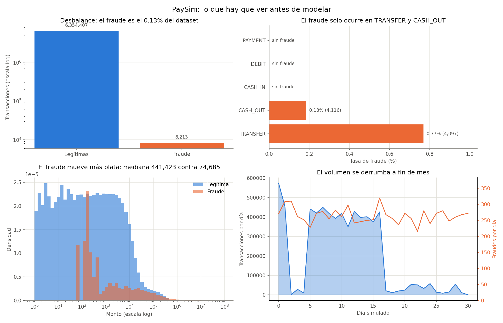
How to read the figure. Top left, the class imbalance on a log scale — without the log scale the fraud bar would be invisible, which is exactly the point. Top right, the fraud rate by transaction type. Bottom left, the amount distribution by class, also logarithmic. Bottom right, two overlaid series: daily volume (blue area, left axis) and daily fraud count (orange line, right axis).
Results
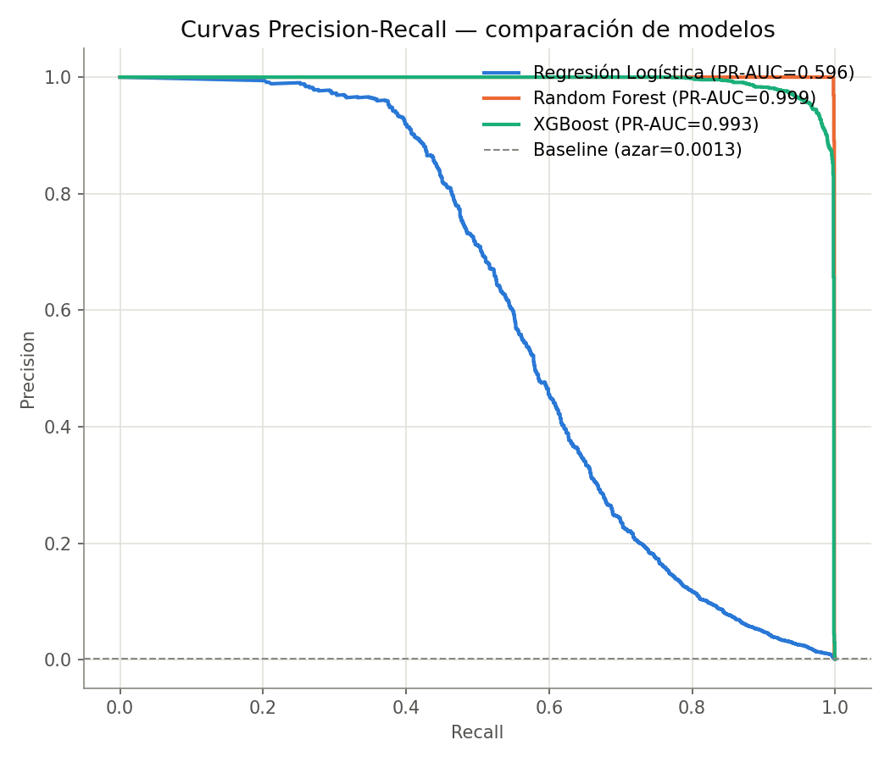
How to read the figure. Three Precision-Recall curves on the same test set. The dashed chance line sits at 0.0013 — almost flush with the x axis, because prevalence is 0.13%. Random Forest and XGBoost hug the top of the figure until recall 0.99; Logistic Regression collapses as soon as it moves away from the origin.
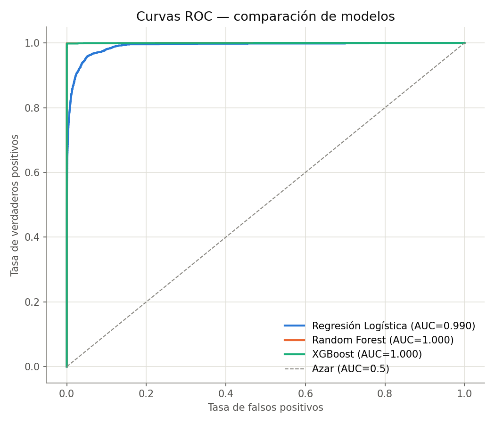
How to read the figure, and why it misleads. The three ROC curves look nearly identical and all excellent: 0.99 or better. Set against the previous figure, this is the visual demonstration of why ROC-AUC doesn't work as a headline metric under extreme imbalance — Logistic Regression has ROC-AUC 0.9900 and PR-AUC 0.5959. The same pair of numbers, on the same row, differs by 0.4. ROC's x axis is the false-positive rate, and with 1.27 million negatives, flagging 57,000 extras barely moves it.
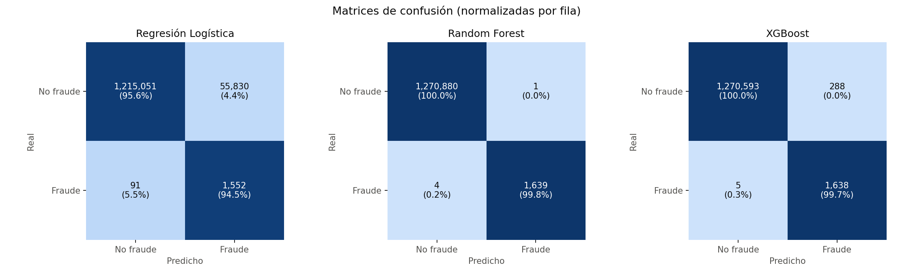
How to read the figure. One matrix per model, with absolute counts in each cell. The cell that matters is the top right: false positives, i.e. legitimate transactions flagged as fraud. Random Forest has 1; Logistic Regression has roughly 55,800.
Measured results (Module 2)
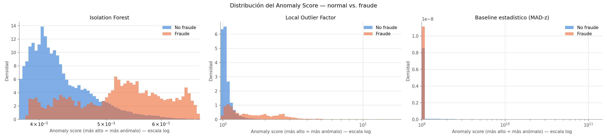
How to read the figure. One panel per detector, showing the anomaly-score distribution of legitimate transactions (blue) against fraudulent ones (orange). The x axis is logarithmic and clipped to the 0.5 and 99.5 percentiles — without that clipping, a single extreme tail would compress the whole region where the two distributions actually separate.
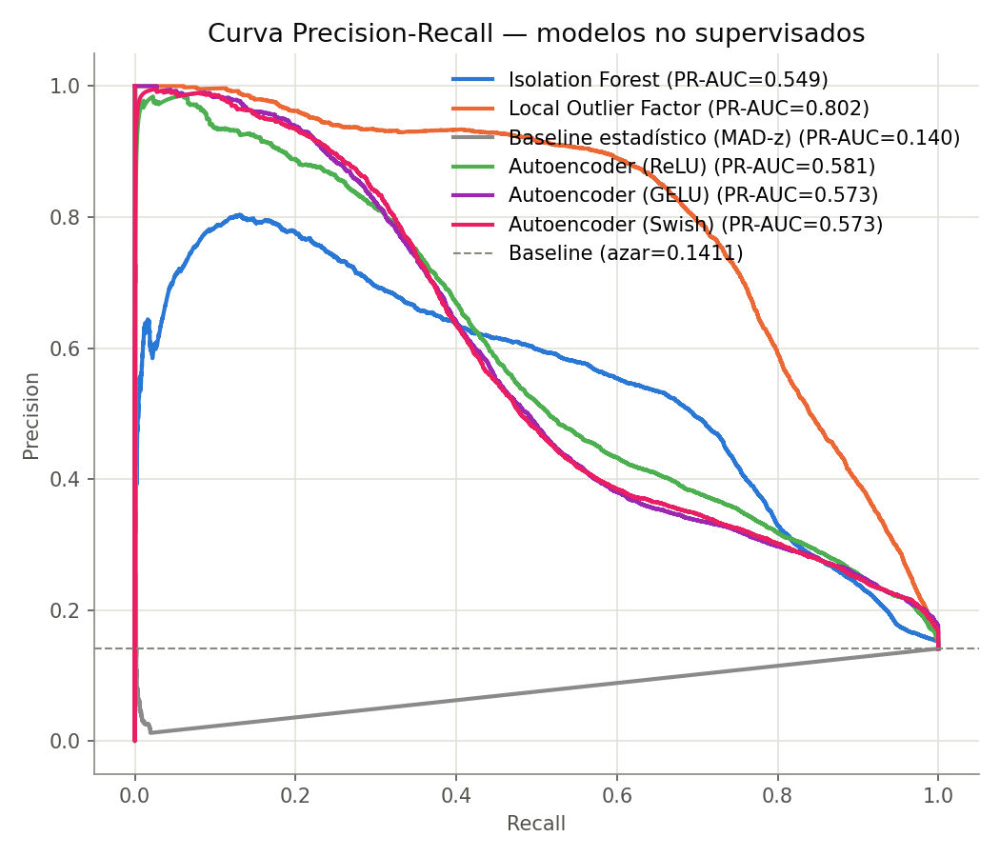
How to read the figure. Each curve sweeps every possible threshold of a detector: moving right flags more transactions, so recall rises and precision falls. The dashed horizontal line is chance — on a set enriched to 14.1%, flagging transactions at random is right 14.1% of the time.
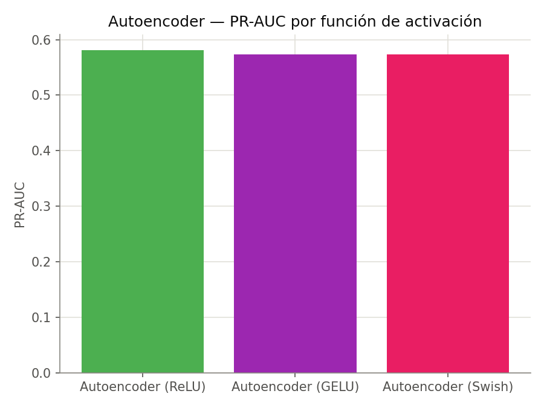
How to read the figure. Three bars, one per activation function, on exactly the same architecture, data and seed. The only thing that changes is the non-linearity.
Results
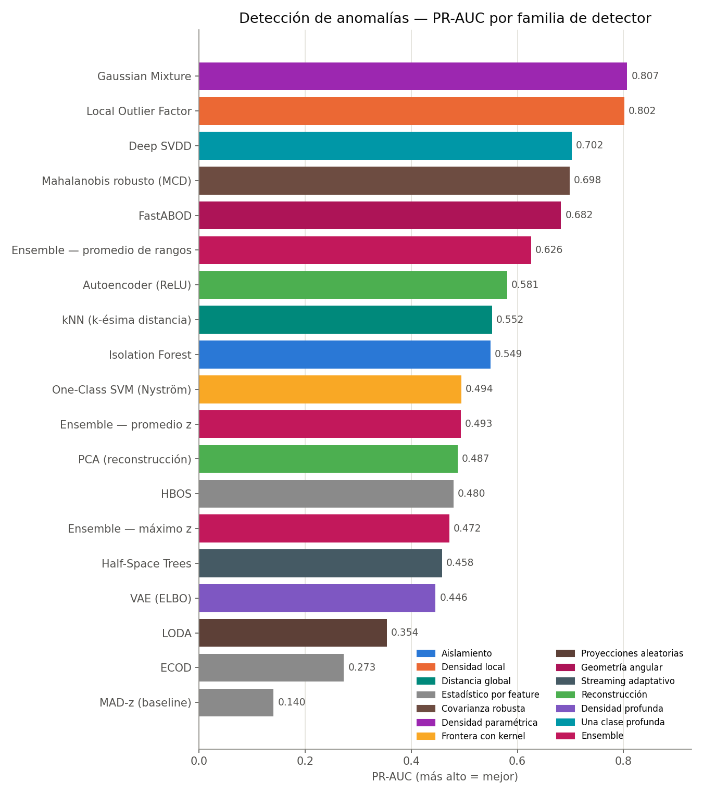
How to read the figure. Horizontal bars ordered by PR-AUC, colored by detector family. The colors matter more than the order: if two bars of the same color sat together, it would suggest that family dominates through some structural property. They don't — the families are scattered across the ranking, and detectors of the same family (the two reconstruction-based ones, the three per-feature statistical ones) land far apart.
Which detectors are redundant?
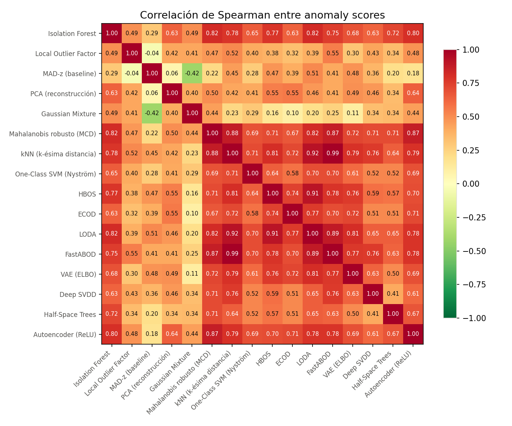
How to read the figure. Spearman correlation between anomaly *rankings*, not between raw scores. Spearman precisely because the scores live on incomparable scales: a Mahalanobis distance and a log-likelihood can't be meaningfully correlated linearly, but the order they produce can.
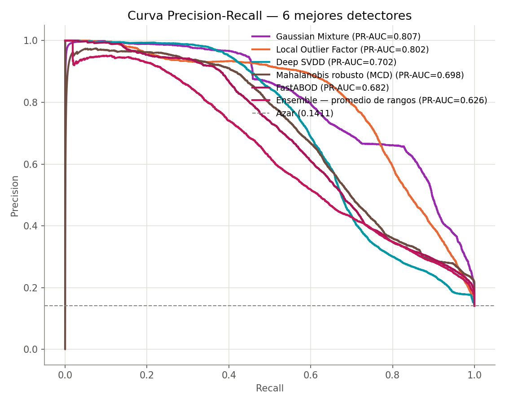
How to read the figure. Only the six best by PR-AUC, because sixteen overlapping curves are unreadable. The interesting part is that they cross: no detector dominates across the whole recall range. Gaussian Mixture leads at the right end and Local Outlier Factor between recall 0.4 and 0.8, so which one you want depends on where the team operates — there's no single answer aggregate PR-AUC can give.
Transaction level: the objective matters more than the depth
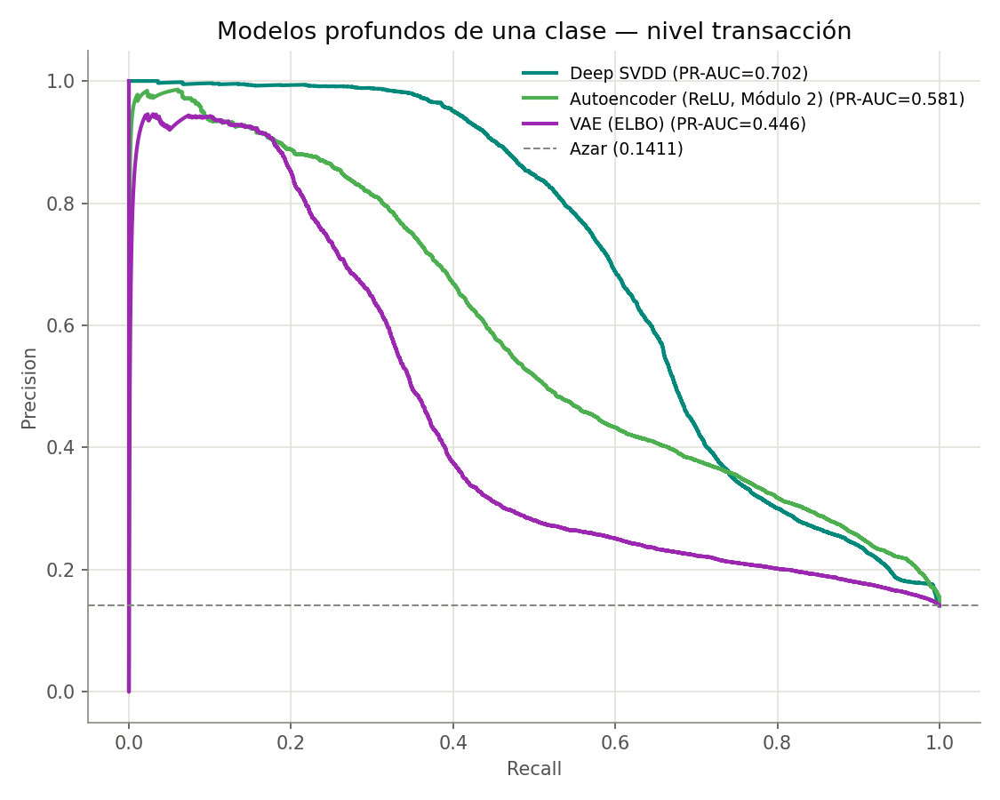
How to read the figure. The same Precision-Recall curves as Module 2, restricted to the three deep models with the autoencoder included as a reference. All three were trained in the same run, on the same split and the same scaling: without that, comparing against a number measured in another execution would mix the between-model difference with between-run variance.
Account level: the sequential detector
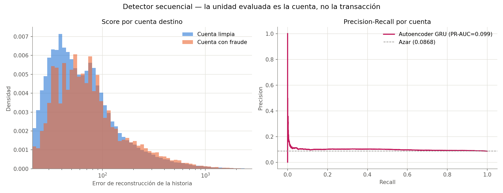
How to read the figure. On the left, the reconstruction-error distribution of clean accounts (blue) against accounts that received fraud (orange). On the right, the corresponding Precision-Recall curve with the chance line dashed.
Results
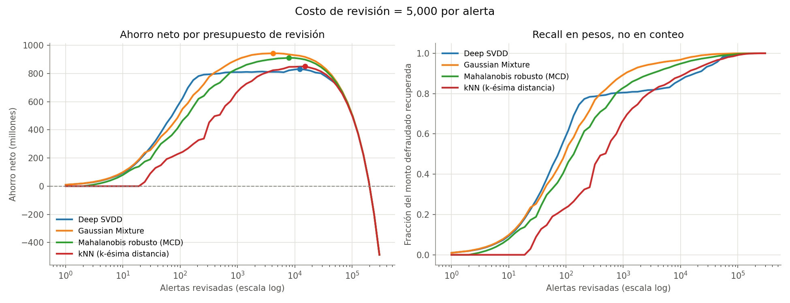
How to read the figure. The x axis — how many alerts get reviewed — is logarithmic in both panels, because the interesting decisions happen between 10 and 10,000 and a linear scale would crush that whole range against the origin.
The threshold: promised versus delivered
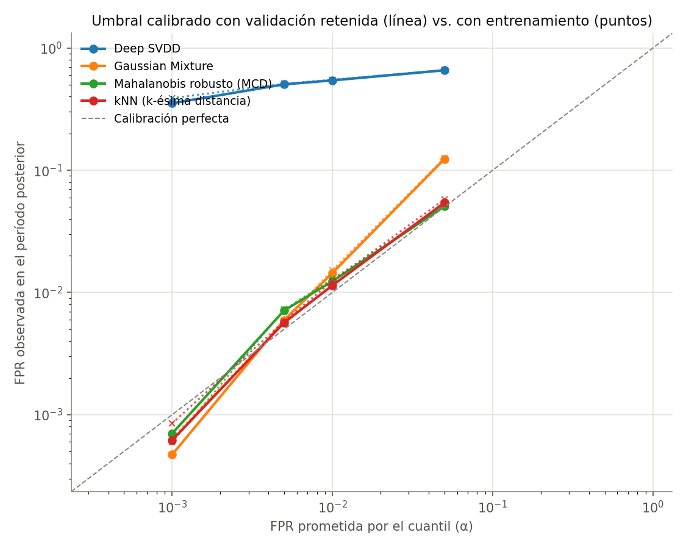
How to read the figure. Both axes logarithmic, and the dashed diagonal is perfect calibration: promise 1% false alarms and deliver 1%. A detector above the diagonal fires more alerts than promised; below it, fewer.
Does the detector age?
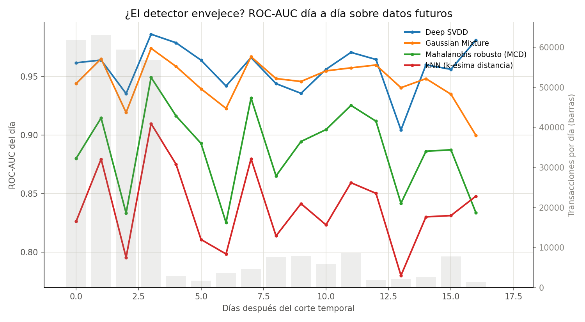
How to read the figure. The lines are each test-period day's ROC-AUC (left axis); the grey background bars are that day's transaction volume (right axis). The bars are there so you can judge how much confidence each point deserves: a day with few transactions gives a noisy metric even though it's drawn like all the others.
Adding detectors is not the same as adding coverage
Conformal detection: turning a hope into a guarantee
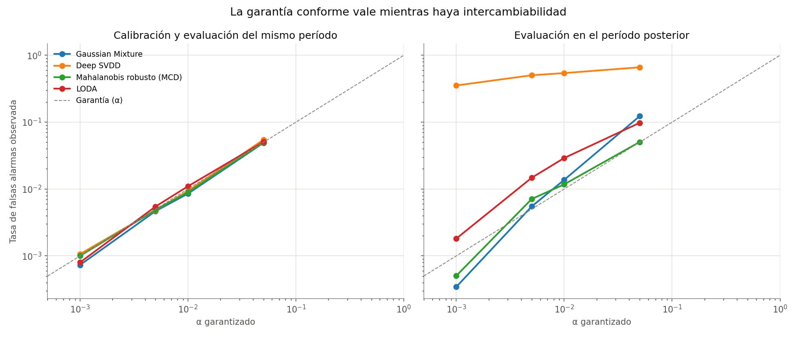
How to read the figure. Two panels sharing a y axis, with the dashed diagonal as the guarantee. On the left, calibration and evaluation from the same period: the scenario where exchangeability holds by construction. On the right, evaluation moves to the later period.
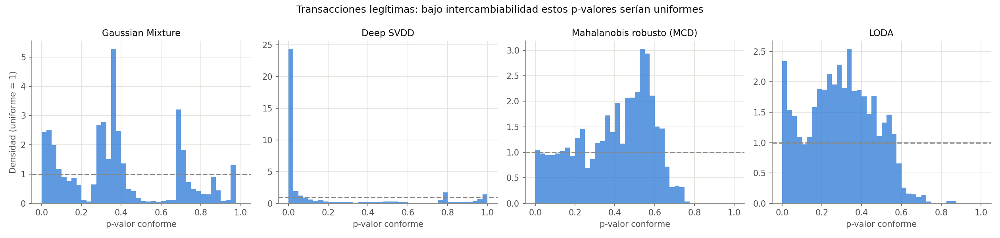
How to read the figure. Histograms of the conformal p-values of legitimate transactions, with the dashed line at density 1, which is the uniform. Under exchangeability those p-values should be uniform on [0,1]: that's the statistical content of the guarantee.
Half-Space Trees: adapting costs one linear pass
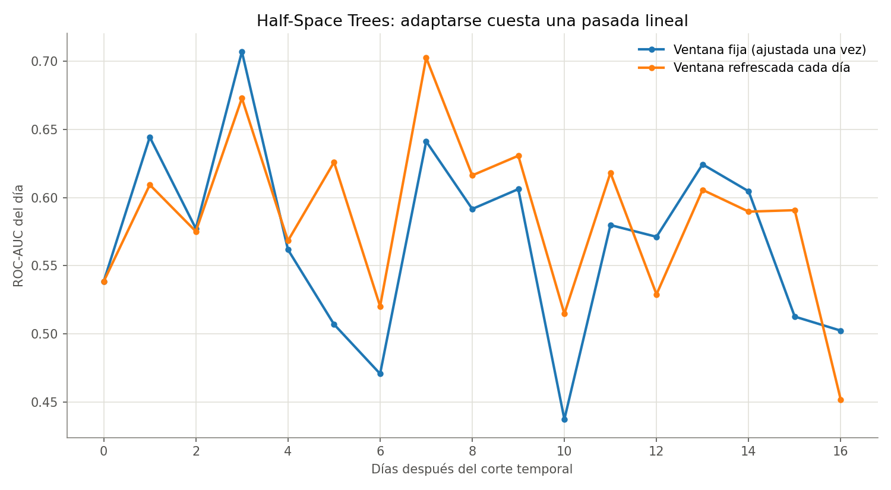
How to read the figure. Two daily ROC-AUC series over exactly the same days and the same data. They share trees, seed and initial window; the only difference is that the orange line refreshes its mass profile with the previous day's traffic.
Fifty labels well spent beat a thousand at random
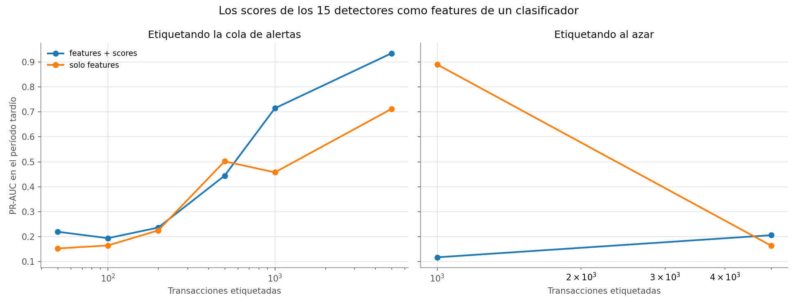
How to read the figure. Two panels sharing a y axis, with the x axis — number of labeled transactions — logarithmic. On the left, labeling the alert queue; on the right, labeling at random. In each panel, one line uses only the original features and the other adds the 16 detectors' scores.
A badly designed experiment, and its correction
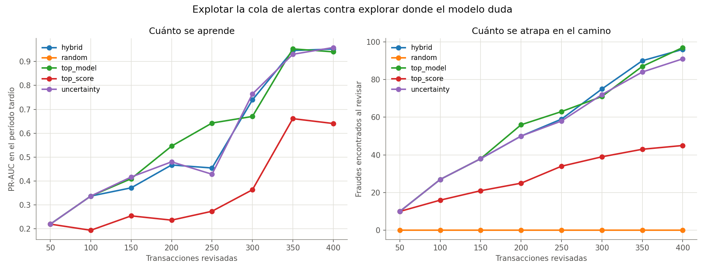
How to read the figure. On the left, how much each strategy learns (PR-AUC on the later period). On the right, how much fraud it finds along the way. The two panels have to be read together: a strategy that learns a lot but catches nothing meanwhile carries an operational cost the left panel doesn't show.
Results
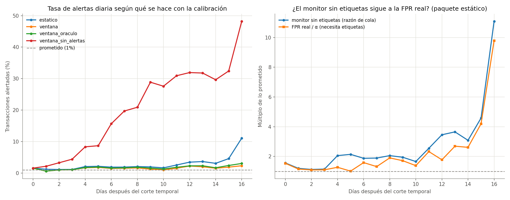
How to read the figure. On the left, the percentage of transactions alerted each day by the four strategies, with the dashed line at the promised 1%. On the right, for the static package only, two series that measure the same thing with and without labels: the tail ratio — fraction alerted divided by α, computable the same day — and the real FPR divided by α, which requires knowing which transactions were legitimate.